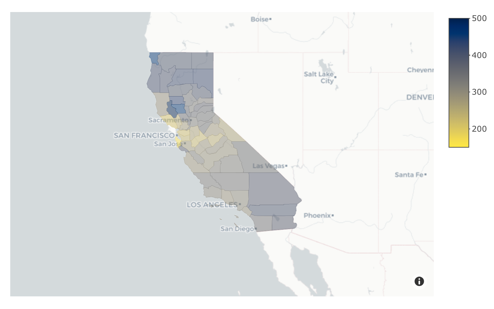

Pattern of Heart Disease Mortality Rate Within Gender and Race Stratification in California During 2014
Caroline He
Latest Update: 2021-12-10 21:06:22
Introduction
Heart disease is the No. 1 cause of death in the world and the one of the leading cause of death for men, women, and people of different races in the United States1. The term “heart disease” includes several types of heart conditions. In the United States, the most common type of heart disease is coronary artery disease (CAD), which can lead to heart attack1. In fact, one person dies every 36 seconds in the United States from cardiovascular disease. About 659,000 people in the United States die from heart disease each year, which is in every 4 deaths1. In addition to being the leading causes of death, heart disease and stroke result in serious illness and disability, decreased quality of life and costs the United States a lot each year, which includes the cost of health care services, medicines, and lost productivity due to death. The major risk factors of heart disease death were divided in to two categories: disease risks and behavior risks. Disease risk factors include high blood pressure, high cholesterol level, diabetes, depression and obesity. And the behavior risks contained smoking, unhealthy eating diet habit(high fat, salt and sugar), poor exercises and excessive alcohol intakes. In this study, the main question was: How were gender and races associated with heart disease death rate in California during 2014? The dataset was from National Vital Statistics System. By examining potential risk factors including gender and race in this study, the pattern of heart disease mortality rate under stratification could be revealed to some extent. The pattern of certain groups in the entire population was used for their corresponding characteristics and behaviors analysis in the discussion session. With the summary of high death rate groups’ characteristics, the community and related organization could advocate and developed complementary heart disease prevention policies.
Methods
It would be ambiguous to analyze this obscure question at one time since there were so many factors involved. There were three sub-questions to be addressed in this study from different perspectives:
- What was the general distribution of heart disease death rate under gender and race stratification?
- Which county had relatively higher mortality rate gap between gender groups?
- How was the mortality rate distributed in each county under gender and race classification?
Data Background
The raw data of heart disease death rate was obtained from CDC Division for Heart Disease and Stroke Prevention, Interactive Atlas of Heart Disease and Stroke. And it was organized into heartdisease dataset by National Vital Statistics System. It was created on February 9, 2017 and updated on July 9, 2018. The dataset was collected in county level and focused on mortality rate in 2014. There were 59.1k rows and 19 columns in total. Here were the detailed information of this dataset:
- The collected time was from 2013 to 2015 and used 3-year average rates. The mortality rates were age-standardized. County rates are spatially smoothed. The data could be viewed by gender and race/ethnicity. Data source: National Vital Statistics System. Additional data, maps, and methodology can be viewed on the Interactive Atlas of Heart Disease and Strok
Since it might be too vague to observe the mortality rate and analyze characteristics from the entire country level, a zoom-in on California data was conveyed in this analysis. The FIPS dataset contained FIPS code of each county and was used for later analysis on geographical considerations.
There were 19 columns in total in heartdisease dataset. Each of the column name and its corresponding explanation was included in table 1.
Table 1: heartdisease dataset variable list
| Variable Name | Description |
|---|---|
| Year | Center of 3-year average |
| LocationAbbr | State, Territory, or US postal abbreviation |
| LocationDesc | county name |
| GeographicLevel | county or state |
| DataSource | where did the data come from |
| Class | Disease name (Cardiovascular Diseases) |
| Topic | Heart Disease Mortality |
| Data_Value | heart disease mortality rate |
| Data_Value_Unit | per 100,000 population |
| Data_Value_Type | the way mortality rate obtained (Age-adjusted, Spatially Smoothed, 3-year Average Rate) |
| Data_Value_Footnote_Symbol | symbol |
| Data_Value_Footnote | sufficient data or insufficient data |
| StratificationCategory1 | gender |
| Stratification1 | gender categories |
| StratificationCategory2 | race |
| Stratification2 | race categories (White, Black Hispanic, Asian and Pacific Islander, American Indian and Alaskan Native) |
| TopicID | ~ |
| LocationID | Location ID |
| Location 1 | latitude and longitude |
There were three variables in fips dataset. Each of the column name and its corresponding explanation was included in table 2.
Table 2: fips dataset variable list
| Variable Name | Description |
|---|---|
| code | FIPS code of each county in US |
| name | all county name in US |
| state | state abbreviation |
Data Cleaning
The R packages and their description involved in this study were listed in Table 3
Table 3: R packages list
| Package | Description |
|---|---|
data.table |
Display information in a grid-like format of rows and columns |
dplyr |
Provide a consistent set of verbs to manipulate data |
dtplyr |
Provides a data.table backend for dplyr |
tidyr |
Change the shape and hierarchy of a dataset |
readr |
Provide a fast way to read rectangular data |
ggplot2 |
Create graphs based on the grammar of graphics |
plotly |
Create interactive web-based graphs via the open source JavaScript graphing library plotly.js |
rjson |
Lightweight data-interchange format |
tidyverse |
An opinionated collection of R packages sharing an underlying design philosophy, grammar, and data structures |
knitr |
Enables integration of code into LaTeX, LyX, HTML, Markdown, AsciiDoc, and reStructuredText documents |
The heartdisease dataset was cleaned following the EDA checklist including function head(),dim(),str() and summary(). After cleaning process, the California data were selected and separated based on gender and race stratification into CA_gender and CA_race, which included its corresponding category. There were several NAs in mortality rate due to insufficient information during collecting process. For later convenience, missing values were replaced by median death rate in each sub-dataset. By applying median values, the outlier effects could be weaken.
Data Wrangling
For CA_gender dataset,the heart disease death rates of male groups and female groups were reformatted horizontally. The new dataset was merged with fips dataset by county name. A new variable called Gap was created in CA_gender, which indicated the death rate differences between male group and female group among each county in California. The gender data after wrangling included variables: county name as LocationDesc, male heart disease mortality rate as value_male, female heart disease mortality rate as value_female and FIPS code for each county as fips.
For CA_race dataset, all five race categories and their matched death rate among each county were extracted and inner_join into a simplified version. Then, the new dataset was merged with fips dataset by county name. The wrangled dataset included variables: county name as LocationDesc, the White heart disease mortality rate as value_white, the Hispanic heart disease mortality rate as value_hispanic, the Black heart disease mortality rate as value_black, the Asian and Pacific Islander heart disease mortality rate as value_asian_pacific, the American Indian and Alaskan Native heart disease mortality rate as value_indian_alaskan and FIPS code for each county as fips.
Preliminary Results
Mortality rate distribution within sex and race stratification
To take a brief look at the pattern of heart disease death rate, the density images of gender and race stratification were presented in Figure 1 and Figure 2. In Figure 1, the x-axis contained the heart disease mortality rates for both male and female groups of each county in CA during 2014 and y-axis contain the matched proportion. Based on the image, though there were small portions of overlapping, the distribution of male group lied on the right of that of female group, which indicated that the male had a higher death rates compared to the female in general.
Figure 1: Mortality rate under gender stratification in CA during 2014
In Figure 2, the x-axis contained the heart disease mortality rates for five race categories of each county in CA during 2014 and y-axis contain the matched proportion. Based on the image, the distribution of the White, the Black and the American Indian and Alaskan Native groups lied on the right of those of the Hispanic and the Asian and Pacific Islander groups, which indicated general trends that the White, the Black and the American Indian and Alaskan Native groups had a higher death rates compared to the other in CA during 2014.(For more information, please visit the interactive figure)
Figure 2:Mortality rate under race stratification in CA during 2014
Mortality Rate Gap Between Male group and Female group in CA
After the laconic overview of distribution of heart disease death rate in CA under gender categories, a closer examination of differences was conducted and performed in Figure 3. The x-axis contained the heart disease death rate for male group and y-axis contained the disease death rate for female group. Each gap between male and female groups for each county was presented as bubble, and magnitude was visualized via size. Based on the image, large portions of counties performed gender differences. Among all counties in California, Butte County(208/100,000 population), Plumas County(206.8/100,000 population) and Yuba County(220.4/100,000 population) seemed to have greatest differences.
Figure 3:Mortality Rate Gap Between Male group and Female group

From the graph, the heart disease mortality rates for several counties were high regardless gender categories, including Kern County, Tulare County and Stanislaus County. To further unmask the pattern, an inspection of geographical factors was necessary. (For more information, please visit the interactive figure)
Mortality Rate Pattern in each county in CA
Gender stratification
The Cholorpath map was a practical way to observe mortality rate pattern in a geographical level. The magnitude of heart death rate in California during 2014 was presented by the color gradient. The map indicated that male groups had relatively higher death rates compared to female groups, which was the same as conclusion above. Take a meticulous inspection on this map, it could be concluded that among all the counties for the male, the mortality rates of Kern County(476.9/100,000 population), Yuba County(506.1/100,000 population), Lake County(473.5/100,000 population) and Stanislaus County(469.4/100,000 population) were relatively higher. For the female, the mortality rates of Tulare County(303.3/100,000 population), Kern County(319.7/100,000 population) and Stanislaus County(315.4/100,000 population) were relatively higher. From the geographical perspective, the counties along the coast had relatively lower heart disease death rate for both male and female groups. (For more information, please visit the interactive figure)
Figure 4:Mortality Rate Pattern(male) Figure 5:Mortality Rate Pattern(female)
Race stratification
Map figures 6-10 indicated that the White, the Black and the American Indian and Alaskan Native had relatively higher heart disease death rates in CA during 2014 compared to the Hispanic and the Asian and Pacific Islander in each county in general, which was the same as conclusions before. For the Hispanic group, the mortality rate of Kern County(296.2/100,000 population) was relatively higher. For the Asian and Pacific Islander group, the mortality rates of Lake County(313.5/100,000 population), Glenn County(259/100,000 population) and Tulare County(507.5/100,000 population) were relatively higher.
Figure 6: Death Rate Map(the Hispanic) Figure 7: Death Rate Map(the Asian and Pacific Islander)
Among all the counties for the White, the mortality rates of Kern County(438.6/100,000 population), Yuba County(447.3/100,000 population), and Stanislaus County(436.7/100,000 population) were relatively higher. For the Black group, the mortality rates of Kern County(501/100,000 population) and Calaveras County(507.5/100,000 population) were relatively higher. For the American Indian and Alaskan Native group, the mortality rates of Lake County(557.2/100,000 population), Colusa County(457.2/100,000 population) and Del Norte County(462.5/100,000 population) were relatively higher. (For more information, please visit the interactive figure)
Figure 8: Death Rate Map(the White) Figure 9: Death Rate Map(the Black) Figure 10: Death Rate Map(the American Indian and Alaskan Native)

From geographical perspectives, the county along the coast had relatively lower heart disease death rate for all race categories. Based on the map investigation, there were several counties which always stayed on the top of the lists no matter how to stratify the variables, including: Kern County, Tulare County and Stanislaus County. A further inspection would be conducted in the next section.
Discussion
As for the different heart disease death rate distribution among the male and the female, the possible reasons could be addressed from two dimensions: behavioral and psychosocial risk factors3. It appeared that smoking and excess alcohol consuming behaviors were more prevalent among the male compared to the female3. Since tobacco and alcohol were major risk leading to heart disease, it was reasonable that mortality rate of the male was higher than the female. From physchosocial scale, the male might be less adaptive facing stressed events and acted in a more aggressive way, contributing increased risks of heart disease3. Besides, referred to some study, the female were more knowledgeable than men to risk factors, which may also lead to gender differences4. For the discrepancies of heart disease death rate among racial categories, the possible reasons could be investigated from internal and external dimensions. For the internal dimension, there was a statistically significant association (p < 0.001) between low hemoglobin level and increased heart disease rate, which differed significantly by race (p = .025) according to the study5. Though the actual pattern of hemoglobin for each racial category still need to be worked on, hemoglobin level might be a factor. Besides, the discrepancies in health coverage in California may also be the reason. As for the geographical level, the prevalence of adult obesity in Tulare County was well above the state’s prevalence, which might related to environmental factors such as the availability of fresh fruits and vegetables or safe walking trails6. As for Kern County and Stanislaus County, it also had discernible high obesity than the average value of the US. The possible factors included inactivity, increased age, unsafe neighborhood and poor access to health food7,8.
Summary
In this study, the pattern of heart disease death rate in CA during 2014 was examined under gender and race stratification. In general, the male had a higher death rates compared to the female. The possible explanation was different level of smoking and alcohol intakes and adaptive ability facing stressed events. For the race stratification, the White, the Black and the American Indian and Alaskan Native groups had a higher death rates compared to the Hispanic and the Asian and Pacific Islander. The possible reason might be the hemoglobin level and discrepancies of CA health coverage. Based on the map distribution, there were several counties including Kern County, Tulare County and Stanislaus County, whose heart disease death rate was distinctly higher compared to the other counties in California. All of three counties had relatively higher obesity rate which was one of leading cause towards heart disease. The possible reason included unsafe environment for physical activity, increased age and poor access towards healthy food.
Citation
- Centers for Disease Control and Prevention. Underlying Cause of Death, 1999–2018. CDC WONDER Online Database. Atlanta, GA: Centers for Disease Control and Prevention; 2018. Accessed March 12, 2020.
- Virani SS, Alonso A, Aparicio HJ, Benjamin EJ, Bittencourt MS, Callaway CW, et al. Heart disease and stroke statistics—2021 update: a report from the American Heart Associationexternal. Circulation. 2021;143:e254–e743.
- Weidner G. Why do men get more heart disease than women? An international perspective. J Am Coll Health. 2000 May;48(6):291-4. doi: 10.1080/07448480009596270. PMID: 10863872.
- Jensen LA, Moser DK. Gender differences in knowledge, attitudes, and beliefs about heart disease. Nurs Clin North Am. 2008 Mar;43(1):77-104; vi-vii. doi: 10.1016/j.cnur.2007.10.005. PMID: 18249226.
- Houghton DE, Koh I, Ellis A, Key NS, Douce DR, Howard G, Cushman M, Safford M, Zakai NA. Hemoglobin levels and coronary heart disease risk by age, race, and sex in the reasons for geographic and racial differences in stroke study (REGARDS). Am J Hematol. 2020 Mar;95(3):258-266. doi: 10.1002/ajh.25703. Epub 2019 Dec 22. PMID: 31840854.
- Tulare County 2017 Community Health Assessment, HHSA Public Health
- Institute for Health Metrics and Evaluation (IHME), US County Profile: Kern County, California. Seattle, WA: IHME, 2016. Centers for Disease Control and Prevention, 2015.
- Chronic Disease Prevention in Stanislaus County, A Framework to Improve Nutritionand Increase Physical Activity